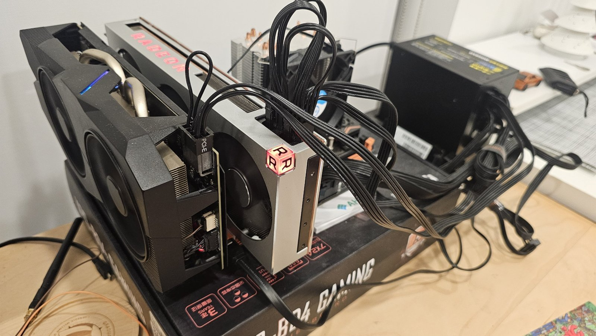
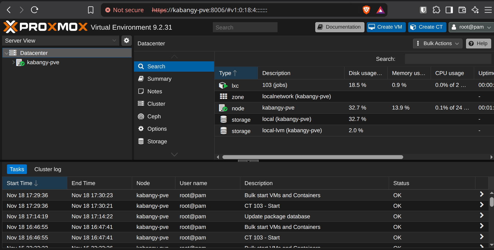
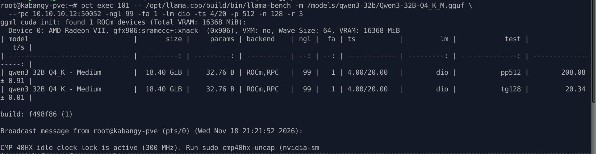
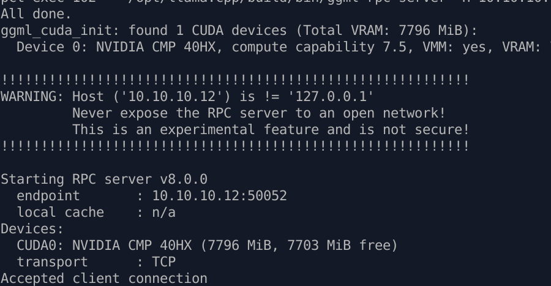
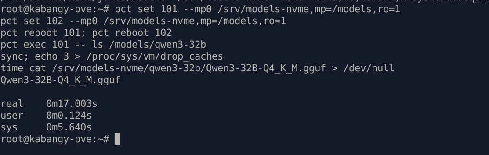
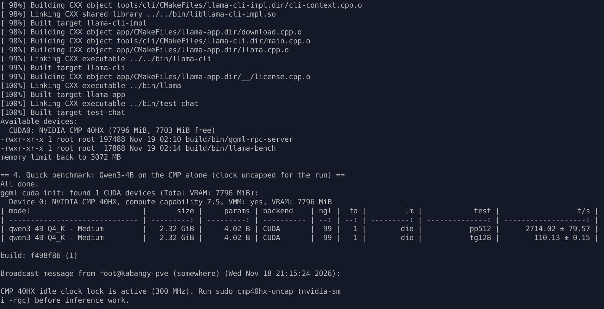

X99 build series: The build · mistral.rs vs llama.cpp · Four LLMs compared · Wake on LAN · ReBar BIOS mod · CMP 40HX unlock · V100 + VFIO · Proxmox
I moved my X99 inference box from Ubuntu on the NVMe to Proxmox VE 9.2 on a SATA SSD. Each GPU now lives in its own unprivileged LXC container, and the host keeps both drivers. The Radeon VII runs on the stock amdgpu driver, and the CMP 40HX runs on my cmpunlocker-patched NVIDIA driver with its Gen2 x16 link and 8 GiB BAR1 intact. I measured no speed loss in any benchmark, including the RPC hop between containers. Pooled Qwen3 32B still runs at 208 tok/s on prompt and 20 tok/s on generation.

I pass GPUs into the containers as device nodes rather than through VFIO. Containers 101 and 103 get /dev/kfd and the
Radeon's render node, and container 102 gets the four /dev/nvidia* nodes. The containers sit on a private bridge, and
nftables in 102 only lets 101 and 103 reach the RPC port. That matters because ggml-rpc-server has no authentication.
| Guest | CPU / RAM / disk | GPU | Inside |
|---|---|---|---|
| 101 llm-radeon | 6 cores / 5 GB / 80 GB | Radeon VII | ROCm 6.3.3, llama.cpp f498f86 (HIP, RPC client) |
| 102 llm-cmp | 6 cores / 3 GB / 40 GB | CMP 40HX | 610.57.04 userspace, CUDA 13.0, llama.cpp f498f86 (CUDA, ggml-rpc-server) |
| 103 jobs | 2 cores / 4 GB / 64 GB | Radeon VII, shared with 101 | My job pipeline and dev work, ROCm 6.3.3 |
I took this screenshot of the Proxmox web UI on the first day, before I created 101 and 102:

I ran every test with llama.cpp f498f86 and -ngl 99 -fa 1 -lm dio -p 512 -n 128, with the CMP clock uncapped.
Each Proxmox number matches my bare metal Ubuntu number within noise.
| Run | Ubuntu, bare metal (tok/s) | Proxmox, containers (tok/s) |
|---|---|---|
| Radeon VII alone, Qwen3 4B, pp512 | 1,386 ± 47 | 1,373 ± 58 |
| Radeon VII alone, Qwen3 4B, tg128 | 105.4 | 106.8 |
| CMP 40HX alone, Qwen3 4B, pp512 | ~2,701 | 2,714 ± 80 |
| CMP 40HX alone, Qwen3 4B, tg128 | ~110.1 | 110.1 |
Pooled over RPC, Qwen3 32B -ts 4/20, pp512 | 208.19 ± 0.52 | 208.08 ± 0.91 |
Pooled over RPC, Qwen3 32B -ts 4/20, tg128 | 19.97 ± 0.02 | 20.34 ± 0.01 |
I ran the pooled bench from the host with 101 driving the Radeon and 102 serving the CMP:

I captured the RPC server in 102 during that run. llama.cpp prints that warning for any address other than localhost, and my firewall rule is why I can accept it here:

Proxmox lives on an older SanDisk Ultra II SATA SSD, and I kept the NVMe untouched with Ubuntu on it. I timed a cold read of the
32B file (19.76 GB) with time cat after dropping the page cache:
| Where the file is read from | Time | Speed |
|---|---|---|
| NVMe (Intel 660p), from Ubuntu | 17.5 s | ~1.13 GB/s |
| SanDisk Ultra II SATA, from Proxmox | 36.1 s | ~548 MB/s |
| NVMe mounted read-only, from Proxmox | 17.0 s | ~1.16 GB/s |
The containers read models from the SanDisk copy, so a cold load takes about 18 s longer than it did on Ubuntu. Generation speed doesn't change, because the weights live in VRAM once they load. I tested the NVMe as a read-only mount from Proxmox and then switched it back off, so the Ubuntu install stays a clean fallback:

I set the Ubuntu baseline before the migration. The Radeon ran the main llama.cpp process (HIP build), and the CMP served its share
through ggml-rpc-server (CUDA build) over localhost. I swept the split with Qwen3 32B Q4_K_M. The RPC device comes first,
so 4/20 means 4 parts on the CMP and 20 on the Radeon:
| Split (CMP/Radeon) | pp512 (tok/s) | tg128 (tok/s) |
|---|---|---|
| 3/21 | Doesn't fit: the 349 MiB compute buffer can't be allocated on the Radeon | |
| 4/20 | 208.19 ± 0.52 | 19.97 ± 0.02 |
| 5/19 | 212.86 ± 1.15 | 19.78 ± 0.02 |
| 6/18 | 218.98 ± 1.97 | 19.58 ± 0.05 |
| 8/16 (first run, mmap) | 212.67 ± 5.64 | 18.22 ± 0.18 |
I got 10% more generation when I moved layers to the faster card. I had estimated 15 to 20% from memory bandwidth. The RPC round
trip, kernel launches and syncing cost the same time at any split, so the gain stayed smaller. For llama-server I use
5,19 to leave room for 8k of context. My earlier V100 and CMP pair reached 478 and
24.4 tok/s, and this pair runs at 0.44× of that on prompt and 0.82× on generation.
I also had to change how I load the model. My box has 15 GB of RAM and the 32B file is 19.8 GB, so mmap loading thrashed the page cache.
One -ts 6/18 load ran for over 7 minutes and read 27 GB before I stopped it. I switched to -lm dio, and it reads
straight from disk into a small buffer. The same load plus a 16-token test then took 37.9 s. In the containers this matters even more,
because their page cache counts against their memory limit.
I chose containers over VMs because of how the patched driver works. The driver reaches Gen2 by retraining through the card's root
port (00:03.0), and it sets up the 8 GiB BAR1 at startup. A VM would only give it a virtual root port, and a guest can't
resize a passed-through BAR. I kept the driver on the host, so my Ubuntu setup carried over
unchanged. In exchange, I pin the kernel and rebuild the module through a hook.
I set up the host with one script that mirrors the nvidia_cmp40hx role in my
Ansible playbook:
.run with --no-kernel-modules, and I pin apt so Debian's driver packages can't replace it.install.sh --no-download builds the patched modules into /lib/modules/7.0.14-30-pve/updates/cmpunlocker/.I checked the card after a cold boot. The compute unlock was active, and the driver's own retrain failed with status 1101 as it always does on X99. My retrain service then brought the link to Gen2 x16:
| 0 NVIDIA CMP 40HX On | 00000000:06:00.0 Off | N/A |
| 36% 29C P8 12W / 184W | 0MiB / 8192MiB | 0% Default |
driver reported: CMP40_PCIE_GEN2_V2: RETRAIN_FAIL status=1101; link at 2.5 GT/s PCIe x16; retraining from root port 0000:00:03.0 (mode=masked)
retrain OK: GPU link 5.0 GT/s PCIe x16, root port 5.0 GT/s PCIe
BAR1 Memory Usage
Total : 8192 MiB
Container 102 runs Ubuntu 24.04 with the 610.57.04 userspace but no kernel module, plus CUDA 13.0 and llama.cpp built for sm_75 with RPC.
A container can't change GPU clocks, so I run cmp40hx-uncap and cmp40hx-cap on the host. This screenshot shows
the end of the container build and my first run on the CMP alone. The broadcast at the bottom is my cap script locking the clock back
at 300 MHz:

I don't load any model at boot. I start the RPC server and the model by hand from two shells on the host, and I uncap the CMP first so it doesn't run at 300 MHz:
# shell 1: leave running
cmp40hx-uncap
pct exec 102 -- /opt/llama.cpp/build/bin/ggml-rpc-server -H 10.10.10.12 -p 50052
# shell 2: benchmark (or llama-server with the same --rpc)
pct exec 101 -- /opt/llama.cpp/build/bin/llama-bench -m /models/qwen3-32b/Qwen3-32B-Q4_K_M.gguf \
--rpc 10.10.10.12:50052 -ngl 99 -fa 1 -lm dio -ts 4/20 -p 512 -n 128 -r 3
# afterwards: Ctrl+C in shell 1, then
cmp40hx-capI check the unlocks with a few commands after any kernel or driver change:
pct exec 102 -- nft list ruleset # only table inet rpcguard
nvidia-smi -q | grep -A3 BAR1 # Total 8192 MiB
cat /sys/bus/pci/devices/0000:06:00.0/current_link_speed # 5.0 GT/s PCIe
journalctl -b -t cmp40hx-gen2-retrain -o cat # retrain OKBoth GPUs and the Radeon's 16 GB BAR depend on three BIOS settings on the X99-BD4. I check these first whenever the board resets itself:
| Setting | Value |
|---|---|
| Above 4G Decoding | Enabled |
| CSM | Disabled (I set Video to UEFI first, save, re-enter, then turn CSM off) |
| ReBarState, read by the ReBarDxe mod | 0x20 (unlimited) |
A Radeon BAR of 256 MB means the mod's ReBarState setting was cleared. I restore it from Linux and check it after the next boot:
printf '\x07\x00\x00\x00\x20' | sudo tee /sys/firmware/efi/efivars/ReBarState-a3c5b77a-c88f-4a93-bf1c-4a92a32c65ce > /dev/null
journalctl -k -b | grep 'BAR=' # want: VRAM RAM=16368M, BAR=16384M
An unclean shutdown can leave GRUB at a grub> prompt, and I then boot the pinned kernel by hand. After that I finish
any interrupted upgrade and rebuild the menu:
set root=(lvm/pve-root)
linux /boot/vmlinuz-7.0.14-30-pve root=/dev/mapper/pve-root ro
initrd /boot/initrd.img-7.0.14-30-pve
boot
dpkg --configure -a
apt-get -f install
update-initramfs -u -k all
update-grub
A container is the easier path when the host driver does something a VM can't, like retraining a physical root port or resizing a BAR.
Build llama.cpp at the same commit in every container that talks RPC. Load large models with -lm dio, since a container's
page cache counts against its memory limit. And keep the RPC port on a private bridge behind a firewall rule, because the server has no
authentication at all.